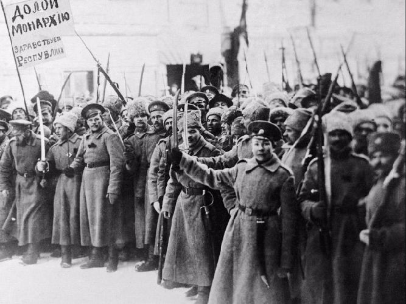

После свержения царя страна осталась без стабильного управления. Временное правительство не справилось с кризисом, а большевики пришли к власти на фоне хаоса.
Основные силы — Красные и Белые. Также участвовали повстанцы, национальные движения и даже иностранные государства.
Экономический кризис, последствия Первой мировой войны, политические разногласия и недовольство действиями новой власти.
Мятеж Чехословацкого корпуса в 1918 году стал ключевым моментом. Он позволил противникам большевиков захватить территории и начать активные боевые действия.
Страна быстро раскололась на части. Начались долгие и ожесточённые сражения, которые затянулись на несколько лет.